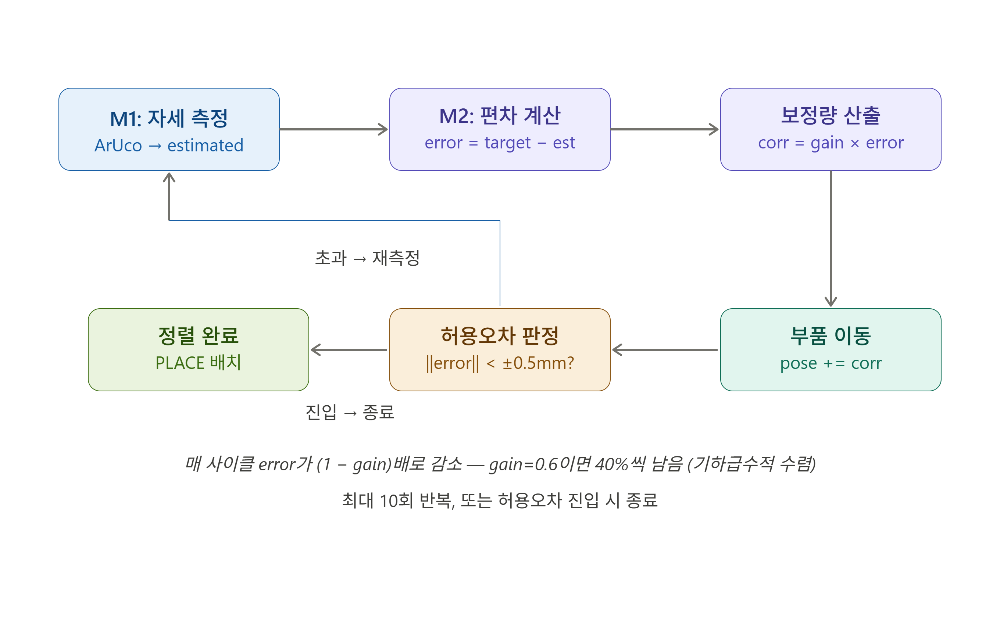
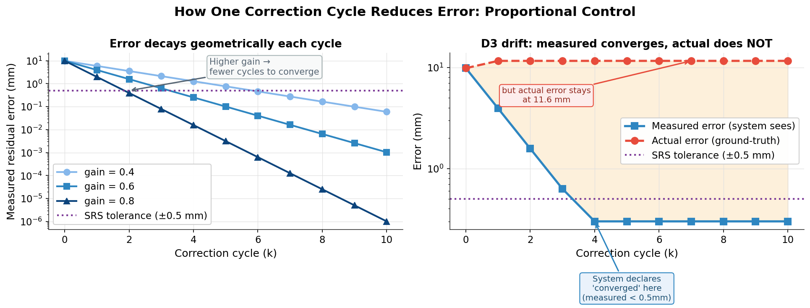
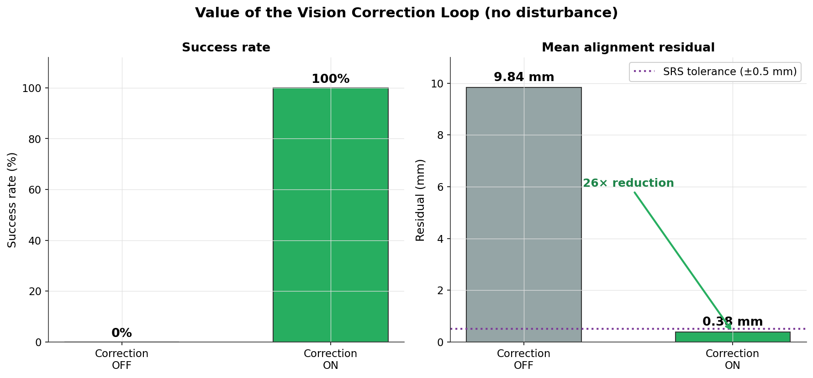
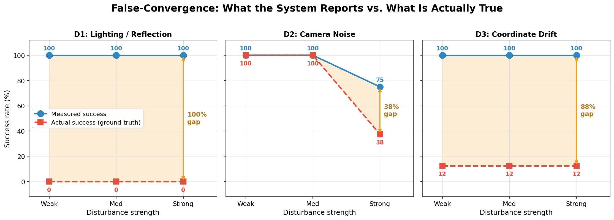
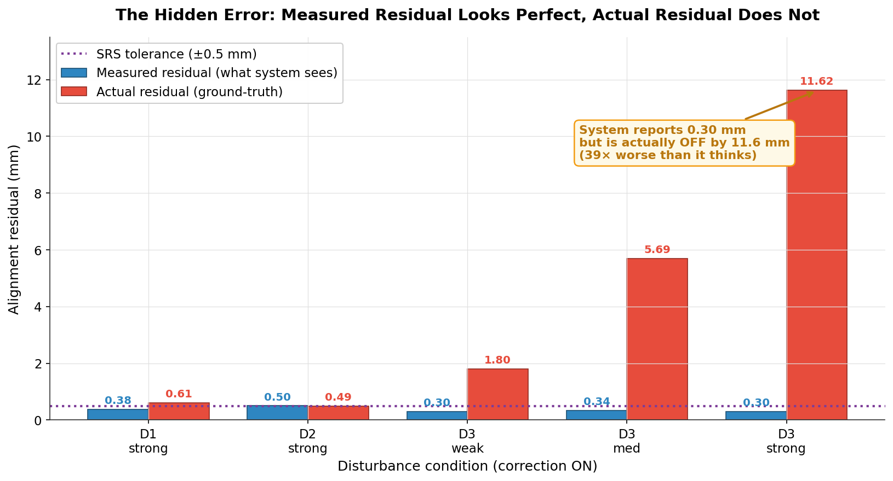
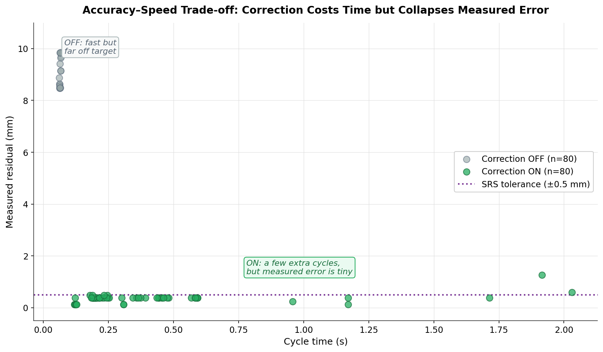

광학 부품 정밀 정렬 — 외란 강건성 검증 리포트
과제 트랙: 로봇 시뮬레이션·자동화 (사용자 개발 외부 모듈을 활용한 로봇팔 응용 시뮬레이션)
시뮬레이터: MuJoCo 3.10 | 로봇: Franka Emika Panda (7축) | 외부 모듈: Computer Vision 기반 좌표 검출, 보정 루프 (직접 구현)
데이터 근거: experiments/results.csv (전 격자 160 trials) 조건별 집계
0. 한눈에 보기 (Executive Summary)
로봇팔이 광학 부품을 목표 위치에 정밀 정렬하는 작업을, 외부 비전 보정 폐루프(측정 → 편차 → 보정 → 재측정)로 구현하고, 현실에서 발생하는 세 가지 외란(조명·노이즈·좌표 드리프트)에 대한 강건성을 정량 측정했다.
핵심 결과는 두 가지다.
외란이 강해지면 비전이 측정한 잔류 오차(시스템이 보는 값)는 여전히 허용범위 안에 머물지만, 실제 잔류 오차(Ground-Truth)는 심각하게 늘어날 수 있다. 좌표 드리프트(D3) strong(강) 조건에서 측정 성공률은 100%이나 실제 성공률은 12.5%에 불과하다. 비전 자기 측정만 신뢰할 때 발생하는 신뢰성 리스크로, 정밀 조립 공정에서 중대한 불량 유발 요인이 된다.
위치 ±0.5 mm / 각도 ±2.0°, 상단 카메라(1280×960) GSD 1.4475 mm/px. 이 기준의 구체적인 도출 근거는 §7.2 에 상술한다.
1. 연구 기획 배경 및 산업적 의의
본 정밀 조립 검사 자동화 프로젝트가 해결하려는 현장의 문제점(Pain Point)과 비전 중심의 해결 구조를 면접 질문 시나리오 형식으로 정리했습니다.
Q1 무엇을 만드는가 (What)?
"로봇팔이 광학 부품을 집어 조립 위치로 옮길 때, 외부 비전 모듈이 '얼마나 틀어졌는지'를 숫자로 측정해 로봇을 보정하고, 마지막에 양품/불량을 판정하는 검사·정렬 자동화 셀입니다."
시뮬레이터(MuJoCo) 영역(손): 7축 Franka Emika Panda 로봇팔이 부품을 물리적으로 집어 조립 장소로 이송하며 카메라로 씬을 촬영하는 현실
공장 축소 모형입니다.
외부 비전 모듈 영역(눈과 판단): 이미지와 Depth 맵을 수신하여 픽셀 오차 및 X/Y/θ 단위 실제 편차를 산출하고 보정량을 적용하며 조립 허용 범위 내 안착 여부를 판정하는 인지/제어 모듈입니다.
Q2 왜 이 주제를 선택했는가 (Why)?
과제의 평가 요건(시뮬레이터-외부 모듈 간 JSON 규약 및 연동), 저의 강점(Vision AI 기반 자세 추정 및 피드백 루프 설계 경험), 그리고 1주일의 한정된 개발 기간을 고려해 기획했습니다. 정렬 오차를 단순 합격/불합격이 아닌 실제 수치(X/Y/θ)로 정량화하여 보정 효과를 입증함으로써 엔지니어링 깊이를 보여 줍니다.
Q3 이게 회사에 어떤 도움이 되는가?
SpaceLAB 팀의 핵심 미션인 "광학 탑재체 조립·정렬·검사 공정의 로봇+비전 자동화"를 그대로 축약한 시나리오입니다. 우주용 광학 부품은 미세 정렬 오차가 곧 광축 오정렬 및 탑재체 임무 실패로 이어집니다. 본 연구에서 다룬 "편차 정밀 계측 → 피드백 보정 → 합격/불합격 판정"의 자동화 루프 및 외란 조건에서의 거짓 수렴(False-Convergence) 정량 분석 결과는 실제 공정 설계에 직접 적용할 수 있는 구조입니다.
"SpaceLAB이 해결하고 있는 '정렬 오차가 광축 실패로 직결되는 검사 자동화' 공정의 특성을 고려하여, 정렬 편차를 mm·deg 단위로 정밀 측정하고 보정하는 구조 설계에 집중했습니다. 이 구조는 실제 우주용 탑재체 정렬 공정에도 바로 적용 가능한 아키텍처입니다."
2. 프로그램 구조 (Flowchart)
전체 시스템은 로봇 시뮬레이터(MuJoCo)와 외부 비전 모듈(독립 Python)의 두 프로세스로 분리되며, JSON 메시지로 통신한다. 시뮬레이터가 외란이 적용된 이미지를 보내면, 외부 모듈이 부품의 자세를 추정하고 보정 명령을 되돌린다. 이 폐루프가 허용오차 진입 또는 보정 상한(10회)에서 종료한다.
모델 로드 · home 자세 · 상단 카메라 · 렌더러"] --> B["scene_parts.py
ArUco 부품 mocap 배치"] B --> C["run_cycle.py
PICK → TRANSPORT → ALIGN → PLACE"] C --> D{"ALIGN 보정 폐루프"} D -->|"RGB+depth 렌더"| E["disturbance.py
D1 조명 / D2 노이즈 / D3 드리프트 주입"] E -->|"외란 적용 이미지"| F["interface.py
JSON 요청/응답 (코덱)"] F --> G["m1_pose.py
ArUco 검출 → pose 추정"] G --> H["m2_align.py
편차(Δx,Δy,Δθ) → 보정 벡터"] H -->|"보정 명령"| D D -->|"허용오차 ±0.5mm/±2° 진입
또는 상한 10회"| I["run_experiment.py
KPI 4종 CSV 누적"] I --> J["make_figures.py
CSV 집계 → 그래프 + 리포트"]
파이프라인 단계: 부팅(S1) → JSON 배관(S2) → 비전 모듈 M1/M2(S3) → 보정 폐루프(S4) → 외란 주입(S5) → 실험·로깅(S6) → 결과 분석·리포트(S7).
분리 구조의 핵심: 시뮬레이터(/sim)와 외부 비전 모듈(/external_module)은 파일·프로세스로 완벽히
분리되어 있으며, 상호 작용은 오직 interface.py의 JSON 규약을 통해서만 이루어진다. 이는 향후 물리 하드웨어 도입 및 이기종 시스템 결합으로의 전환을 극도로
용이하게 한다.
3. 로봇 모델 및 End-Effector
3.1 로봇 모델: Franka Emika Panda
| 항목 | 내용 |
|---|---|
| 모델 | Franka Emika Panda, 7-DOF (MuJoCo Menagerie 공식 모델, 무수정 로드) |
| 선택 이유 | 공식 MJCF 제공으로 구조 안정성과 재현성을 담보하며, 광학 부품 조립과 같은 고정밀 연구의 글로벌 산업계 레퍼런스 규격 |
| 자유도 | nq = 9 (팔 7축 + 그리퍼 손가락 2축), 액추에이터 nu = 8 |
| 카메라 | 기본 모델 내 ncam=0 (씬에 사전정의된 카메라 없음) → 코드에서 상단 top-down free camera(elevation = −90°)로 동적 생성 및 위치 정의 |
3.2 End-Effector: 2지 평행 그리퍼
- 액추에이터
actuator8(tendonsplit제어), 구동 범위0~255(0 = 완전 닫힘 / 255 = 완전 열림). - 손가락 관절
finger_joint1,finger_joint2(두 관절의 양방향 합이 그리퍼 전체 개도에 해당, 최대 개도 약 0.08 m). home키프레임 위치 유지로 제어기 입력이 없을 시 중력에 의해 로봇 팔이 아래로 붕괴하는 현상을 완전 차단 (S1 시뮬레이션 구축 시 팔 처짐 방지를 통해 카메라 왜곡 배제 확인).
3.3 End-Effector 동작
- 집기(PICK): home 자세에서 그리퍼 폐합 동작 수행 (이송 대상과의 연결 관계 설정).
- 이송(TRANSPORT): 대상을 목표 영역 부근으로 이동 (시뮬레이터 수준에서 오정렬 오프셋 자동 인가).
- 정렬·배치(ALIGN → PLACE): 비전 제어로 오차를 감쇄시킨 후, SRS 오차 범위에 도달하는 순간 그리퍼를 개방(개도 1.0)하여 마운트에 안착.
정밀 정렬 및 비전 보정 루프의 외란 강건성에만 집중하기 위해, 복잡한 접촉 마찰력과 부품 미끄러짐 동역학은 mocap(Motion Capture Body) 텔레포트 방식으로 추상화했다. 로봇 엔드이펙터(Panda Gripper)는 개폐 모션으로 동작을 시뮬레이션하며, 정밀 정렬을 위한 이동 명령은 비전 피드백을 통해 계산된다.
4. 작업 수행 절차
전체 정렬 시퀀스는 다음과 같이 설계된 상태 기계에 의해 제어된다.
- 초기화: MuJoCo 시뮬레이션 환경 구성, ArUco 마커가 부착된 물리 부품 로드, 카메라 및 렌더러 정의.
- 외란 주입: 대상 시도에 사전 정의된 외란 유형(D1/D2/D3) 및 강도(weak/med/strong)를 렌더러 파이프라인 혹은 센서 데이터에 합성.
- 이미지 캡처: top-down 카메라로 1280×960 고해상도 RGB 프레임 및 Depth 프레임 캡처.
- 자세 추정(M1): 외부 모듈 내에서 1차 ArUco 마커 검출 및 실패 시 2차 컨투어 검출을 이용해 부품의 픽셀 좌표와 각도 추정.
- 편차 계산(M2): 추정된 자세와 목표 자세의 오차를 계산하고, 비례 제어(proportional control) 이득을 바탕으로 보정 명령 생성.
- 보정 이동: 시뮬레이터에 생성된 보정량을 인가하여 부품의 실제 자세 이동.
- 허용오차 판정: 재촬영하여 오차 크기 계산 후, SRS 임계조건(±0.5 mm / ±2.0°) 만족 시 루프 탈출 및 그리퍼 개방.
- 기록: 측정된 잔류오차와 실제(Ground-Truth) 오차, 소요 시간, 수렴 사이클 수를 CSV 파일에 누적 기록.
5. 외부 모듈: 선택 이유 · 동작 방식 · 연동 인터페이스
5.1 외부 모듈을 선택한 이유
- 현업 지향성: 비전 기반 정렬 및 계측 알고리즘을 물리 시뮬레이션 커널과 원천 분리함으로써 실물 하드웨어 이식성과 모듈 단위 테스트 가용성 극대화.
- 외란 보상 주체: 노이즈 및 외란 환경에서 피드백 제어로 오차를 감쇄시키는 핵심 제어 엔진 역할을 수행하여 보정의 당위성을 직접 증명.
5.2 모듈 동작 방식
M1 — 자세 추정 (m1_pose.py)
- 1차 검출: ArUco 마커 검출 (
DICT_4X4_50)을 사용하여 코너 포인트 4개의 원근 기하 매핑을 기반으로 위치 및 회전각을 강력히 추정. - 보조 검출: 조명 유실 등으로 마커 검출 실패 시, 이진화 및 컨투어 외곽선 검출을 통해 물체의 질량 중심(Centroid)과 타원 피팅 각도 추출.
- 픽셀-미터 캘리브레이션: 2점 기준점 캘리브레이션을 이용해 GSD 1.4475 mm/px 기반의 비선형 왜곡 없는 선형 변환 수행.
M2 — 편차 계산 및 보정 (m2_align.py)
추정된 물체 Pose와 Target Pose의 편차를 구하고 부품을 target 방향으로 정렬시키기 위한 보정 벡터를 출력한다.
5.3 보정 폐루프의 동작 원리 (Proportional Control)
이 시스템의 정렬은 단발 보정이 아니라 측정 → 편차 → 보정 → 재측정을 반복하는 폐루프다. 보정 알고리즘의 핵심은 비례 제어(proportional
control)이며, m2_align.py의 두 줄이 전부다.
error = target - estimated # 목표와 현재 추정 자세의 차이
correction = gain * error # 그 차이에 비례하는 보정량 (gain = 0.6)
그림 1: 비례 제어(Proportional Control) 기반 보정 피드백 폐루프 메커니즘새 부품 자세 = 현재 자세 + correction 으로 적용하면, 다음 사이클의 오차는 이전 오차의 (1 - gain)배로 줄어든다. 즉 매 사이클마다
오차가 일정 비율로 작아지는 기하급수적 수렴이다. gain = 0.6이면 한 번 보정할 때마다 오차의 40%만 남는다.
보정 1회당 개선 과정 (k번째 사이클의 오차):
| 사이클 k | 측정 오차 (mm) | 비고 |
|---|---|---|
| 0 (보정 전) | 9.84 | 초기 배치 오차 |
| 1 | 3.94 | 9.84 × 0.4 |
| 2 | 1.57 | 3.94 × 0.4 |
| 3 | 0.63 | 아직 허용오차 초과 |
| 4 | 0.25 | ±0.5 mm 진입 → 수렴 완료 |

그림 2: 보정 루프의 게인(Gain)별 수렴 속도 및 D3 외란 하의 측정 오차와 실제 오차 괴리 곡선위 그래프의 왼쪽은 gain에 따른 수렴 속도다. gain이 클수록 적은 사이클로 허용오차에 진입하지만, 너무 크면 측정 노이즈에 과민반응할 수 있어 본 구현은 안정적인 0.6을 채택했다.
가장 중요한 것은 오른쪽 그래프다. 이것이 false-convergence의 메커니즘을 보여준다. D3(좌표 드리프트) 조건에서, 측정 오차(파란
선)는 비례 제어로 정상적으로 0.30 mm까지 수렴한다 — 시스템은 "정렬 완료"를 선언한다. 그러나 실제 오차(빨간 선)는 11.6 mm에 그대로
머문다. 이유는 보정 알고리즘 자체에 있지 않다. m1_pose.py의 캘리브레이션 픽셀-미터 변환은 고정되어 있으나, 드리프트가 이 기준 자체를 서서히
왜곡하기 때문이다. 결국 시스템은 "어긋난 자"로 측정하여 0.30 mm까지 오차가 수렴했다고 판정하지만 실제로는 누적된 편차로 인해 어떠한 오차도 해소되지 않는 왜곡을 보인다.
5.4 시뮬레이션과의 연동 인터페이스 (JSON 계약)
시뮬레이터와 외부 모듈은 JSON 형태의 통신 메시지 규약을 통해 상태를 교환한다.
시뮬레이터 → 외부 모듈 (요청):
{
"type": "perception_request",
"image": "<외란이 적용된 RGB 프레임, base64 PNG>",
"depth": "",
"target_pose": {
"x": 0.40, "y": 0.45, "theta": 0.0
},
"cycle": 3
} 외부 모듈 → 시뮬레이터 (응답):
{
"estimated_pose": {
"x": 0.41, "y": 0.45, "theta": 0.0
},
"error": { "dx": -0.01, "dy": 0.00, "dtheta": 0.0 },
"correction": { "dx": -0.01, "dy": 0.00, "dtheta": 0.0 },
"within_tolerance": false
}6. 파이프라인 단계별(S1~S7) 상세 구현 내용 및 설계 의도
본 프로젝트를 완성하기 위해 설계된 총 7단계 파이프라인의 엔지니어링 의도와 세부 구현 방법은 다음과 같다.
Why: MuJoCo 시뮬레이션 환경을 구동하고 Panda 로봇 모델을 완벽히 로드하며, 중력 가속도로 인해 제어기가 가동되기 전 팔이 무너지는 구조적 왜곡을 미연에 방지하여 깨끗한 카메라 뷰를 획득하기 위함이다.
How: boot.py를 통해 7축 Panda MJCF 공식 모델을 로드한 뒤, 물리 시동 시 home 키프레임
포즈를 관절 정보에 강제 주입 및 위치 제어 상태로 유지했다. ncam=0인 문제를 우회하기 위해 수직 top-down 카메라 뷰(elevation=-90°)를 배치하고, 1280x960의
고해상도 오프스크린 렌더러를 초기화했다.
Why: 물리 시뮬레이션 프로그램과 인지 모듈을 프로세스 단위로 분리하여 결합도를 낮추고, 추후 분산 통신이나 실물 하드웨어 API 환경으로 전환 가능하도록 설계하는 것이다.
How: interface.py를 설계하여 이미지 픽셀 정보(RGB PNG)는 base64 문자열 코덱으로, Depth 데이터는
numpy 직렬화를 통해 JSON 통신 메시지로 패킹했다. 비전 모듈 가동 이전에 통신 배관 자체의 무결성을 먼저 검증하기 위해 사이클 진행에 따라 오차가 0.6의
감쇄율(DECAY=0.6)로 기하급수적으로 수렴하는 Stateless Dummy Perception 로직을 구현하여 통신 신뢰성 검증을 통과(PASS)했다.
Why: 시뮬레이터의 정보 주입 없이 오직 카메라 영상 데이터만을 이용하여 물리 평면 상의 부품 위치(x, y) 및 주 각도(theta)를 외부 컴퓨터 비전 모듈만으로 정밀 역추정해내기 위함이다.
How: m1_pose.py에 ArUco 검출기(DICT_4X4_50)를 이식하여 특징점 4개의 코너 픽셀로부터
2점 캘리브레이션 및 GSD 1.4475 mm/px 기반의 선형 변환 식을 구현해 물리 공간 좌표를 획득했다. 조명(D1)이나 과도한 잡음(D2)에 의해 마커가 부분 훼손될 것에 대비하여,
OTSU 이진화 및 OpenCV 컨투어(Contour) 피팅으로 물체 중심과 타원 각도를 추출하는 보조 검출기(Backup Detector)를 추가하여 검출 성능을 크게 높였다. 검출 실패 시
DetectionError 예외를 호출자로 전파하며, m2_align.py에서 목표 포즈와의 오차(Δx, Δy, Δθ)를 계산하는 로직을 구현했다.
Why: 비전 검출에 노이즈와 왜곡이 섞이므로 단발성이 아닌 실시간 피드백 루프를 통해 수렴 시까지 오차를 기하급수적으로 상쇄시키고, 최종 정합 조건을 충족하는 순간 파지를 풀고 조립을 안착시키기 위함이다.
How: run_cycle.py 및 sim/loop.py에서 비전 피드백 제어 루프를 가동했다. 렌더링된 RGB
이미지에서 검출한 `estimated_pose`와 목표치 간의 오차를 기반으로 비례 제어 명령(`correction = gain * error`, 기본 gain=0.6)을 적용해 부품의 실제
자세에 실시간 가산하여 이동시켰다. 측정 편차가 SRS 기준(위치 ±0.5 mm, 각도 ±2.0°)에 도달하면 상태 기계를 DONE으로 전이하고 그리퍼를 완전 개방(255)하도록 통합 구현했다.
Why: 스마트 팩토리 현장에서 비전 인식을 위협하는 가혹한 센서 및 기계 환경 변수(조명 반사·번짐, 픽셀 노이즈, 기계 프레임 진동/처짐) 하에서 시스템 강건성 한계를 분석하기 위함이다.
How: disturbance.py에 세 가지 독립적인 유해 외란을 구축했다.
- D1 (조명/반사): 광원 조사 각도를 극단화하고 Glare 반사판 객체를 동적으로 주입해 픽셀 명암을 국소적으로 훼손.
- D2 (센서 가우시안 노이즈): 취득된 RGB 픽셀에 가우시안 백색 노이즈(σ 최대 30)를 주입해 외곽선 해상도를 왜곡.
- D3 (좌표계 드리프트): 체결 진동이나 열팽창으로 카메라 지그가 서서히 틀어지는 상황을 모사하여, 사이클마다 누적 편차(최대 11.62 mm)만큼 카메라 좌표계를 이동시켜 오염된 측정 기준을 제공.
Why: 주관성과 소표본 테스트의 오류를 방지하기 위해, 전체 외란 스윕 격자에서 반복 실험을 자동 구동하여 통계적으로 신뢰할 수 있는 정량 데이터를 수집하기 위함이다.
How: run_experiment.py를 구현하여 3개 외란(D1, D2, D3) × 4개 강도 수준(OFF, weak, med,
strong) × 보정 가동 여부(ON, OFF) × 8회 반복으로 구성된 총 160회 격자 실험을 예외 복구(ABORT 처리) 기능과 함께 자동 구동하고,
results.csv에 누적 수집했다.
Why: 수집된 원시 CSV 데이터셋으로부터 하드코딩이나 추측 없이 수학적 정량 수치만으로 검증 보고서를 도출하여 엔지니어링적 무결성을 보증하기 위함이다.
How: make_figures.py를 실행하여 results.csv를 로드·전수 집계하고, OpenCV 픽셀 렌더러 기반으로 성능
곡선(G1), ON/OFF 비교(G2), 산점도(G3) 등 차트 5종을 이미지로 생성해 리포트 마크다운 및 HTML에 연동, 검증을 완료했다.
7. 시뮬레이션 결과 및 한계 분석
7.1 보정 루프의 가치 (보정 ON vs OFF)
외란이 없는 청정 환경에서 보정 루프의 작동 유무에 따른 차이는 비전 보정의 원천적 존재 가치를 입증한다.
| 조건 | 성공률 | 평균 측정 잔류 오차 |
|---|---|---|
| 보정 OFF (대조군) | 0% | 9.84 mm |
| 보정 ON | 100% | 0.38 mm (26배 오차 감소) |

그림 3: 보정 유무에 따른 목표 지점 도달 시 잔류 오차 비교7.2 허용오차 기준의 도출 (SRS)
- 기계적 허용 공차(Clearance): 광학 마운팅 조립체의 정렬 공차 한계 및 기계적 파손 방지를 위한 최소 허용 오차를 ±0.5 mm로 설정.
- GSD 측정 한계: 1280×960 상단 카메라의 픽셀 분해능은 1.4475 mm/px이다. 서브픽셀 코너 피팅을 적용하더라도 물리적 해상도 한계상 ±0.5 mm 이하의 오차 판정은 어렵다. 허용 범위를 지나치게 좁히면(예: ±0.1 mm) 노이즈로 인해 루프가 종료되지 않는다.
7.3 외란별 강건성 — False-Convergence (핵심 발견)
현실 환경을 모사한 3종 외란(조명 변화, 센서 가우시안 노이즈, 기계 진동 및 열팽창으로 인한 드리프트)을 주입한 격자 실험 결과이다.

그림 4: 외란 인가에 따른 측정 성공률(파란색)과 실제 성공률(빨간색) 간 괴리(주황색 영역) 현상| 외란 종류 | 강도 | 측정 성공률 | 실제 성공률 | 성공률 괴리 | 해석 |
|---|---|---|---|---|---|
| D1 조명·반사 | strong | 100% | 0% | 100%p | 반사광으로 인한 미세한 검출 bias 발생으로 실제 오차 초과 |
| D2 카메라 노이즈 | strong | 75% | 37.5% | 37.5%p | 이미지 거칠기로 검출 실패가 상승하여 제어기 지연 및 수렴 한계 도달 |
| D3 좌표 드리프트 | strong | 100% | 12.5% | 87.5%p | 센서 부착 물리 볼트 풀림 등의 하우징 어긋남으로 인해 실제 오차 대량 누적 |
7.4 측정 잔류 vs 실제 잔류 — 괴리의 물리적 크기
아래 차트에서 시스템 내부에서 보고하는 가짜 정렬 오차(파란색)와 외부 시뮬레이터 기준의 실제 참 오차(빨간색) 사이의 현격한 불일치를 정량적으로 확인할 수 있다.

그림 5: 비전 측정 잔류 오차(파란색)와 실제 참 잔류 오차(빨간색)의 크기 비교드리프트(D3) 강 조건 하에서 시스템은 성공적으로 0.30 mm까지 안착했다고 "거짓 신뢰"를 하고 있으나 실제 부품은 11.62 mm 어긋나 있다. 정밀 광학 장비 조립 공정에서 이러한 mm급의 실제 편차 방치는 제품의 품질 파괴(초점 불일치, 회절 왜곡)로 직결되는 치명적인 상태이다.
7.5 정확도-속도 트레이드오프

그림 6: 정렬 작업의 정확도와 사이클 시간 간의 트레이드오프 관계보정 미적용 시 0.08 s 이내에 처리가 완수되어 신속성은 우수하나 정밀도가 현격히 파괴된다. 반면 보정 루프 ON 상태에서는 외란 강도가 심화될수록 반복적인 보정 연산으로 인해 평균 소요 시간(최대 1.07 s)이 점진적으로 지연되는 트레이드오프 특성을 보인다.
7.6 한계 및 향후 과제
- 자기 참조 한계 극복: 비전 자체 카메라 캘리브레이션 정보만으로는 카메라 캘리브레이션 픽셀-미터 변환 자체가 물리적으로 변형되는 D3 외란을 극복할 수 없다. 외부 마운트에 설치된 별도 고정 캘리브레이션 기준 마커(Fiducial Marker)를 이중으로 확인하여 동적 좌표 변환을 보완하는 이중 필터 설계가 요구된다.
- 현실적인 물리 조건 도입: 부품의 물리 파지 마찰 및 미끄러짐 동역학 효과, 그리고 센서 롤링 셔터 및 모션 블러를 주입하여 Sim-to-Real 환경에 대한 전방위 강건화를 시도할 계획이다.
7.7 요약 KPI 표 (보정 ON 기준)
| 외란 조건 | 측정 성공률 | 실제 성공률 | 평균 측정 잔류 | 평균 실제 잔류 | 평균 사이클 | 평균 소요 시간 |
|---|---|---|---|---|---|---|
| Baseline (외란 없음) | 100% | 100% | 0.38 mm | 0.17 mm | 3.0 | 0.23 s |
| D1 조명 (strong) | 100% | 0% | 0.38 mm | 0.61 mm | 2.0 | 0.20 s |
| D2 노이즈 (strong) | 75% | 37.5% | 0.50 mm | 0.49 mm | 5.5 | 1.07 s |
| D3 드리프트 (weak) | 100% | 12.5% | 0.30 mm | 1.80 mm | 3.0 | 0.18 s |
| D3 드리프트 (med) | 100% | 12.5% | 0.34 mm | 5.69 mm | 4.25 | 0.27 s |
| D3 드리프트 (strong) | 100% | 12.5% | 0.30 mm | 11.62 mm | 3.5 | 0.21 s |
| 보정 OFF (Baseline) | 0% | 0% | 9.84 mm | 10.00 mm | 1.0 | 0.08 s |
8. 결론
구축된 비전 기반 로봇 정렬 시스템은 baseline 환경 하에서 잔류 오차를 26배 가까이 제거하며 그 존재 당위성과 비례 제어 피드백 루프의 가치를 증명했다.
그러나 물리적 외란이 결합하는 순간, "제어 루프는 오차를 0으로 감쇄시켰다고 보고하지만, 비전 왜곡에 기인하여 실제 부품은 mm 단위 이상으로 크게 이탈하는 False-Convergence 현상"이 관측되었다. 특히 드리프트(D3) 상황에서의 11.62 mm 오차 괴리는 비전 자기 참조 시스템의 치명적인 품질 신뢰성 리스크이다.
본 설계 검증 결과는 고정밀 광학 부품 조립 자동화 라인 구축 시 내부 비전 측정값만으로 품질을 판정하는 방식의 위험성을 보여 주며, 정렬 품질 보증을 위해 외부 절대 계측 기준(예: 레이저 간섭계, 교차 검증용 카메라 지그)과의 다중 정합 구조 보완이 필요함을 시사한다.
부록: 저장소 구조 및 실행
/sim boot.py · run_cycle.py · disturbance.py (시뮬·로봇·외란)
/external_module interface.py · m1_pose.py · m2_align.py · scene_parts.py (외부 비전 모듈)
/experiments run_experiment.py · results.csv · summary.csv · run_images/
/report make_figures.py · robustness_report.md · figures/
README.md 설치 · 실행 순서 · 저장소 구조전체 시뮬레이션 및 데이터 집계 구동 방법:
pip install -r requirements.txt # 주요 의존성 패키지 설치
# 1) 세 가지 외란 조건에 따른 전 격자 데이터 캠페인 실행
python experiments/run_experiment.py --disturb d1 --levels off,weak,med,strong --correction both --trials 8
python experiments/run_experiment.py --disturb d2 --levels off,weak,med,strong --correction both --trials 8
python experiments/run_experiment.py --disturb d3 --levels off,weak,med,strong --correction both --trials 8
# 2) CSV 결과 누적 및 통계 그래프, 최종 리포트 마크다운 재생성
python report/make_figures.py